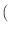
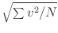
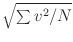

Next: Vector Field File Format
Up: Command Line Utilities
Previous: Bitmap File Format Conversion:
Making Data Tables from Vector Fields:
avf2odt
The avf2odt program converts rectangularly meshed vector field
files in any of the
recognized formats (OVF, VIO)
into the ODT 1.0 data table format. (Irregular meshes are
not supported by this command. Note that any OVF file using the
``irregular'' meshtype is considered to be using an irregular mesh, even
if the mesh nodes do in fact lie on a rectangular grid.)
Launching
The avf2odt launch command is:
tclsh oommf.tcl avf2odt [standard options] \
[-average <space|plane|line|point|ball>] [-axis <x|y|z>] \
[-ball_radius brad] [-defaultpos <0|1>] [-defaultvals <0|1>] \
[-extravals flag] [-filesort method] [-headers <full|collapse|none>] \
[-index label units valexpr] [-ipat pattern] [-normalize <0|1>] \
[-numfmt fmt] [-onefile outfile] [-opatexp regexp] [-opatsub sub] \
[-region xmin ymin zmin xmax ymax zmax] \
[-rregion rxmin rymin rzmin rxmax rymax rzmax] \
[-truncate <0|1>] [-v level] [-valfunc label units fcnexpr] \
[infile ...]
where
- -average <space|plane|line|point|
ball>
- Specify type of averaging. Selection of Space averaging
results in the output of one data line (per input file) consisting
of the average vx, vy and vz field values in the selected
region (see -region option below). For example, in
magnetization files, vx, vy and vz correspond to Mx,
My and Mz. If plane or line is selected, then the
output data table consists of multiple lines with 4 or 5 columns per
line, respectively. The last 3 columns in both cases are the vx,
vy and vz averaged over the specified axes-parallel affine
subspace (i.e., plane or line). In the plane case, the first
column specifies the averaging plane offset along the coordinate
axis normal to the plane (see -axis option below). In the
line case, the first 2 columns specify the offset of the
averaging line in the coordinate plane perpendicular to the line.
If the averaging type is point, then no averaging is done, and
the output consists of lines of 6 column data, one line for each
point in the selected region, where the first 3 columns are the
point coordinates, and the last 3 are the vx, vy and vz
values at the point. If the type is ball, then one line is
output for each sample point for which a ball of radius brad
(see -ball_radius option) centered about that point lies
entirely inside the selected region. The output values consist of 6
columns: the ball center point location and the vx, vy and
vz values averaged across the ball. As a special case, if the
spatial extent of the selected region is two-dimensional (e.g., all
the sample locations have the same z-coordinate), then the
averaging region is taken to be a disk instead of a ball.
Similarly, if the spatial extent of the selected region is
one-dimensional, then the averaging region is reduced to a
one-dimensional line segment. (Note: The output columns described
above may be suppressed by the -defaultpos and
-defaultvals options. Additional columns may be introduced by
the -index and -valfunc options.) The default averaging
type is space.
- -axis <x|y|z>
- For the -average plane and -average line averaging types,
selects which subset of affine subspaces the averaging will be
performed over. In the plane case, the -axis represents
the normal direction to the planes, while for line it is the
direction parallel to the lines. This parameter is ignored if
-average is not either plane or line. Default value
is x.
- -ball_radius brad
- This option is required if -average is ball, in which case
brad specifies the radius of the averaging ball in problem
units (e.g., meters). If -average is not ball, then this
option is ignored.
- -defaultpos <0|1>
- By default, the output data columns are as described in the
description of the -average option above. However,
-defaultpos 0 may be used to omit the columns indicating the
averaging position.
- -defaultvals <0|1>
- By default, the output data columns are as described in the
description of the -average option above. However,
-defaultvals 0 may be used to omit the columns containing the
averaged vx, vy and vz values. In particular, this may be
useful in conjunction with the -valfunc option.
- -extravals <0|1>
- Specify -extravals 1 to augment the output with columns
for the average L1 norm
| vx| + | vy| + | vz|
 /N, the normalized L2
norm
, the minimum component absolute value,
and the maximum component absolute value.
/N, the normalized L2
norm
, the minimum component absolute value,
and the maximum component absolute value.
- -filesort method
- Specifies the sorting order to apply to the input file list. This
order is important when using the -onefile option, since it
controls the order in which the rows from the various input files
are concatenated. Method should be either the keyword ``none'', or
else a valid option string for the Tcl command lsort, e.g.,
``-ascii -decreasing''. Note that the lsort sort options all
begin with a hyphen, ``-'', and that if you want to use multiple
options they must be grouped as one element to filesort (by,
for example, placing quotes around the list). The default value is
``-dictionary'' if the -ipat option is specified, or ``none''
otherwise.
- -headers <full|collapse|none>
- Determines the style of headers written to the output ODT file(s).
The full style (default) provides the standard headers, as described
in the ODT documentation. Specifying ``none'' produces raw data
lines without any headers. The collapse style is used with multiple
input files and the -onefile output option to concatenate
output with no ODT header information between the segments.
- -index label units valexpr
- Adds an input file based index column to the output, where label is
the column header, units is a string displayed as the column units
header, and valexpr is a Tcl expr expression that may include
the special variables $i, $f1, $f2, ..., $d1,
$d2, ...; here $i is the 0-based index of
the file in the list of input files, $f1 is the first number
appearing in the input filename, $f2 is the second number
appearing in the input filename, $d1 is the first number
appearing in the ``Desc'' fields in the header of the input file,
etc. For example, if there are two input files named
foo-100.ovf and and foo-101.ovf, then setting valexpr to
abs($f1)+1 would yield a column with the value 101 for all lines
coming from foo-100.ovf, and the value 102 for all lines coming
from foo-101.ovf. (We use the Tcl expr function
abs because the leading hyphen in foo-100.ovf gets
interpreted as a minus sign, so $f1 is extracted as -100.)
On Unix systems, the valexpr string should be surrounding by single
quotes in order to forestall interpolation of the special variables
by the shell. On Windows, the valexpr string should be surrounded
by double quotes as usual to protect embedded spaces.
Multiple instances of the -index option on the command line
will result in multiple columns in the output file, in the order
specified. The index columns, if any, will be the first columns in
the output file.
- -ipat pattern
- Specify input files using a pattern with ``glob-style'' wildcards.
Especially useful in DOS. Files must meet the infile
requirements (see below).
- -normalize <0|1>
- If 1, then the default averaged output values vx, vy and vz
are divided by the maximum magnitude that would occur if all the
vectors in the averaging manifold are aligned. (In particular, the
maximum magnitude of the output vector is 1.) This option should
be used carefully because the normalization is done independently for
each output row. For -normalize 0
(the default), averaged output values are in file units.
- -numfmt fmt
- C-style output format for numeric data in the body of the output
table. Default value is ``
%- #20.15g''.
- -onefile outfile
- Generally a avf2odt writes its output to a collection of files
with names generated using the -opatexp and -opatsub
specifications. This option overrides that behavior and sends all
output to one place. If outfile is ``-'', then the output is sent
to standard output, otherwise outfile is the name of the output file.
- -opatexp regexp
- Specify the ``regular expression'' applied to input filenames to
determine portion to be replaced in generation of output filenames.
The default regular expression is:
(\.[^.]?[^.]?[^.]?$|$)
- -opatsub sub
- The string with which to replace the portion of input filenames
matched by the -opatexp regexp during output filename
generation. The default is
.odt.
- -region xmin ymin zmin xmax ymax zmax
- Axes-parallel rectangular box denoting region in the vector field
file over which data is to be collected. The locations are in
problem units (typically meters). A single hyphen, ``-'', may be
specified for any of the box corner coordinates, in which case the
corresponding extremal value from the input file is used. Optional;
the default, -region - - - - - -, selects the entire input file.
- -rregion rxmin rymin rzmin rxmax rymax rzmax
- This option is the same as -region, except that the locations
are specified in relative units, between 0 and 1.
- -truncate <0|1>
- When opening an existing file for output, the new output can either be
appended to the file (-truncate 0), or else the existing data
can be discarded (-truncate 1). The default is -truncate 0.
- -v level
- Verbosity (informational message) level, with 0 generating only
error messages, and larger numbers generating additional information.
The level value is an integer, defaulting to 1.
- -valfunc label units fcnexpr
- Similar to the -index option, -valfunc adds an additional
column to the output with label and units as the column header, and
fcnexpr is a Tcl expr expression that may include special
variables. Here, however, the allowed special variables are
$x, $y, $z, $r,
$vx, $vy, $vz, $vmag, where
$x, $y, $z, and $r are sample location and
magnitude, respectively (
r =
 ), and
$vx, $vy, $vz and $vmag are vector component
values and magnitude. The output is the value of fcnexpr averaged
across the manifold selected by the -average option. A couple
of examples are
), and
$vx, $vy, $vz and $vmag are vector component
values and magnitude. The output is the value of fcnexpr averaged
across the manifold selected by the -average option. A couple
of examples are
-valfunc Ms A/m '$vmag'
-valfunc M110 A/m '($vx+$vy)/sqrt(2.)'
As with the valexpr string for -index, the fcnexpr string
should be surrounding by single quotes on Unix in order to
forestall interpolation of the special variables by the shell. On
Windows, the fcnexpr string should be surrounded by double quotes as
usual to protect embedded spaces.
The output value is not affected by the -normalize option.
Multiple instances of the
-valfunc option on the command line will result in multiple
columns in the output file, in the order specified. These
additional columns will be append to the right of all other columns in
the output file.
- infile ...
- Input file list. Files must be one of the recognized
formats, OVF 1.0 or VIO, in a rectangular mesh subformat.
The file specification options require some explanation. Input files
may be specified either by an explicit list (infile ...),
or by giving a wildcard pattern, e.g., -ipat *.omf, which is
expanded in the usual way by avf2odt (using the Tcl command
glob). Unix shells (sh, csh, etc.) automatically expand
wildcards before handing control over to the invoked application, so the
-ipat option is not usually needed--although it is useful in case of a
``command-line too long'' error. DOS does not do this expansion, so
you must use -ipat to get wildcard
expansion in Windows.
The resulting file list is sorted based on the -filesort
specification as described above.
If -onefile is not requested, then as each input file is
processed, a name for the corresponding output file is produced from
the input filename by rules determined by handing the -opatexp
and -opatsub expressions to the Tcl regsub command. Refer
to the Tcl regsub documentation for details, but essentially
whatever portion of the input filename is matched by the -opatexp
expression is removed and replaced by the -opatsub string. The
default -opatexp expression matches against any filename
extension of up to 3 characters, and the default -opatsub string
replaces this with the extension .odt.
OOMMF Documentation Team
September 30, 2022